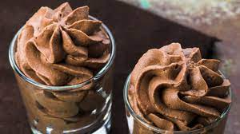

Chocolademousse
Deze heerlijke chocolademousse is de perfecte afsluiter voor een maaltijd.
Ingrediënten
- 200 gram pure chocolade
- 100 ml slagroom
- 2 eieren
- 1 eetlepel suiker
Bereidingswijze
- Smelt de chocolade au bain-marie.
- Klop in een aparte kom de slagroom tot het stijf is.
- Klop in een andere kom de eieren en suiker tot een lichtgeel mengsel.
- Voeg het gesmolten chocolade mengsel toe aan het eimengsel en roer goed door.
- Spatel vervolgens de stijfgeklopte slagroom voorzichtig door het chocolademengsel.
- Giet het mengsel in kleine glaasjes en zet deze in de koelkast totdat de mousse opgesteven is (minimaal 2 uur).

Tip
Serveer de chocolademousse met verse aardbeien voor een extra smaakbeleving.